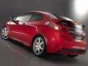
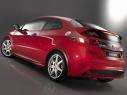
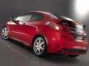

El Civic tiene un equipamiento de serie completo, todos tienen control de estabilidad. El equipamiento opcional que se monta en fábrica es muy reducido; sólo hay opción de navegador, asientos con calefacción y tapicería de piel para la versión "Executive", no para las otras dos, sport y confort. La pintura metalizada es una opción para todas las versiones. Hay otros elementos de equipamiento que se pueden montar en el concesionario, como distintos equipos de música, de ruedas y elementos diferenciadores de la carrocería.

El Civic se caracteriza porque es más bien duro (y algo seco) de suspensión. Al menos con los neumáticos 225/45 R17 es un coche estable y con buen tacto. El motor Diesel es más satisfactorio por prestaciones y repuesta que el 1.8 de 140 CV y puede ser más silencioso a alta velocidad. En el Civic, las prestaciones y el consumo según los datos de la marca son muy buenos; no hay ninguno que gaste menos y es de los mejores en prestaciones.
Precio: 18:000 Euros

Página oficial de Honda: www.nuevohondacivic.com